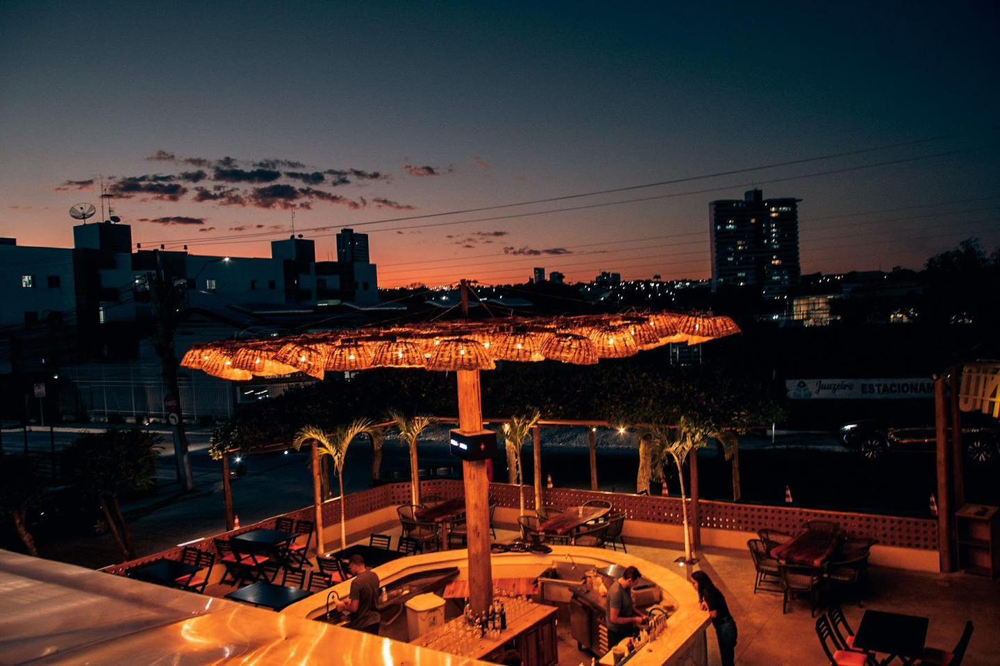
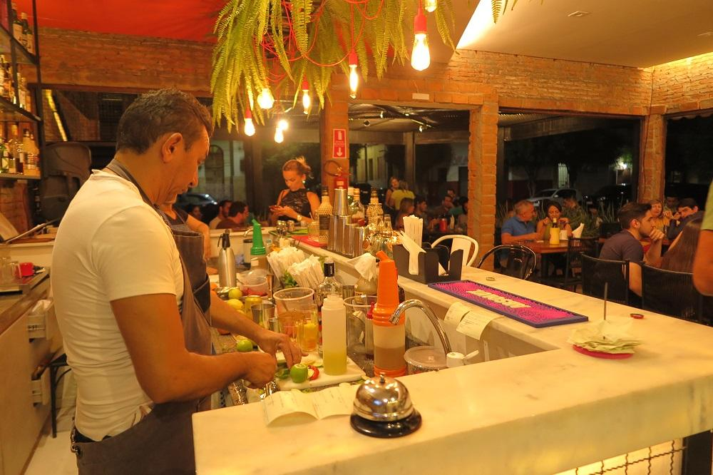
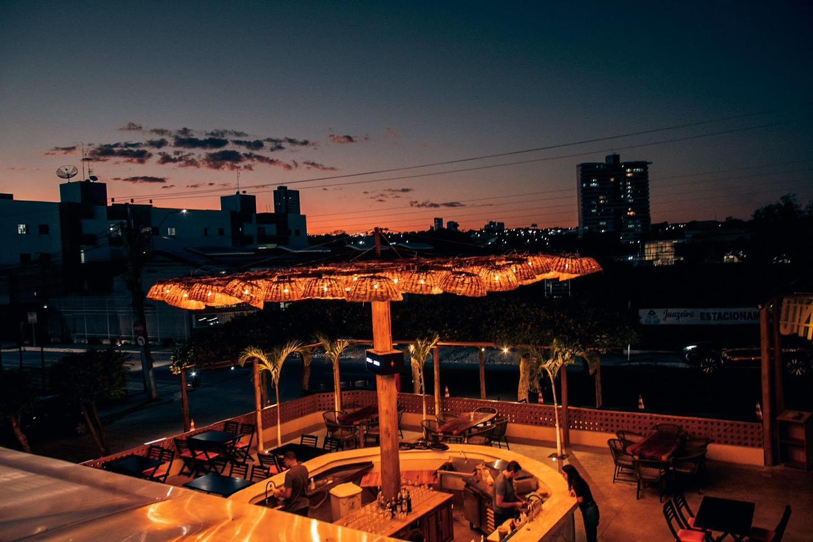
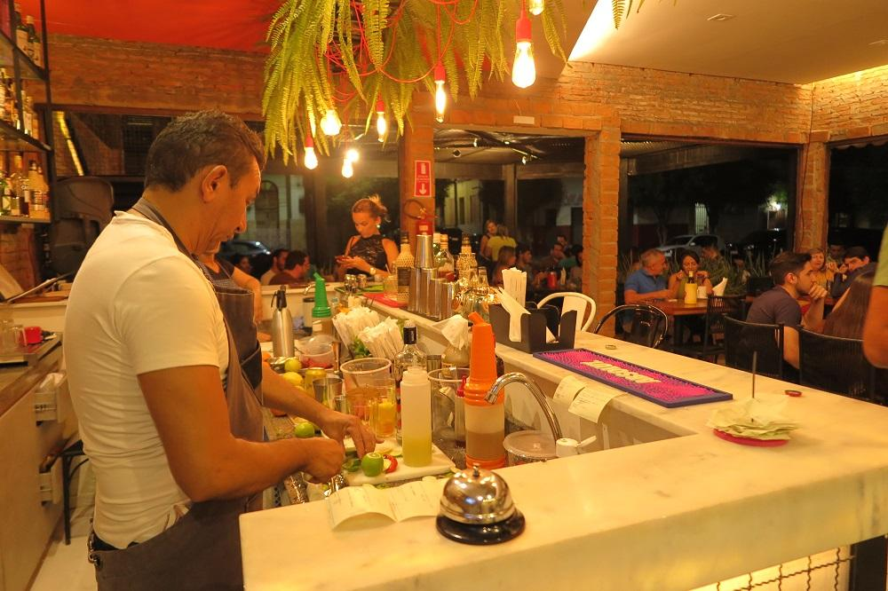
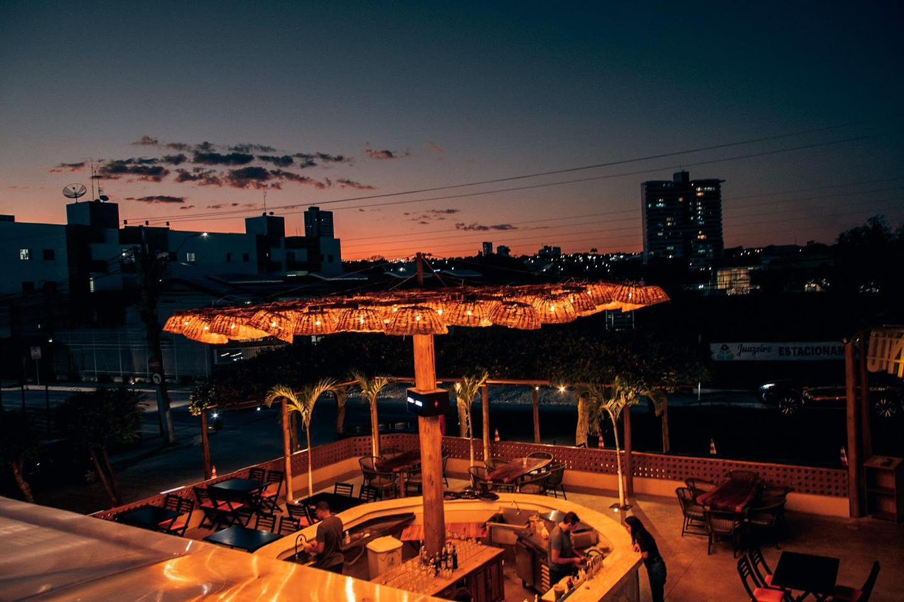
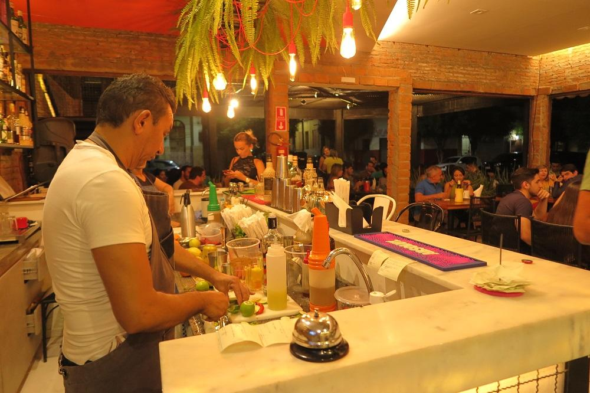

Fotos e Sua Localização
 



O Terraço São Bento está localizada em Juazeiro do Norte, Ceará. Para mais detalhes, veja o mapa abaixo:
O Terraço São Bento, localizado em Juazeiro do Norte, é um restaurante que combina gastronomia de qualidade com um ambiente sofisticado e vista privilegiada da cidade. O cardápio oferece pratos variados, incluindo opções da culinária regional e contemporânea, sendo ideal para refeições em família, encontros românticos ou celebrações especiais. É conhecido pelo atendimento excelente e pela experiência completa que proporciona aos visitantes.


O Terraço São Bento está localizada em Juazeiro do Norte, Ceará. Para mais detalhes, veja o mapa abaixo: